CS184/284A Spring 2025 Homework 1 Write-Up
Names: Daniel Liu
Link to webpage:
Daniel Liu 184 Homeworks
Link to GitHub repository:
Daniel Liu 184 GitHub
Overview
In this homework, I get to implement part of the rasterization pipeline
for a graphics program. This includes rasterization and supersampling,
mipmap level sampling, and texture pixel sampling. This homework was
really interesting, since I play games and frequently mess with settings
such as bilinear filtering, mipmap levels, supersampling level, etc... but
I've never really known exactly what they do and how they are implemented.
Learning and implementing the various techniques helped me understand the
fundamentals of what the techniques do and their tradeoffs.
Task 1: Drawing Single-Color Triangles
To raterize triangles, we can sample pixels in the bounding box of each
triangle, and check whether or not the center of each pixel is within the
triangle. If it is, we can color that pixel with the triangle's color. To
determine if a point is within a triangle, we can check which side of each
of the three line segments the pixel is on. If we check the line segments
in order, and the point is on the same side of all three line segments,
then the point is within the triangle.
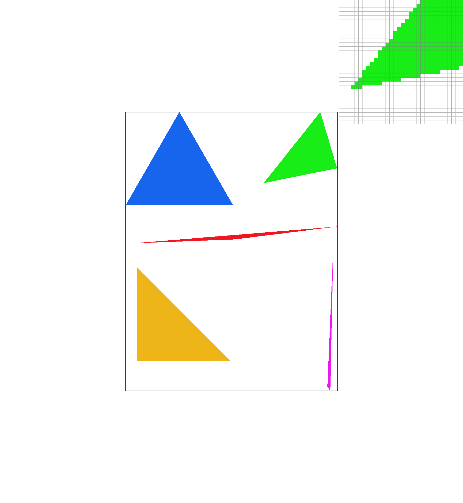
The algorithm I used precalculates much of the equation for checking which
side of each triangle line segment the point is on. I also split the image
into tiles of size 16x16, and check the four corners of the tile. This
provides a significant speedup, since if the corners are in the triangle
or outside of the triangle, we can either color the whole tile or skip the
whole tile without checking each pixel.
Extra Credit
| Algorithm Name |
Algorithm Speed (microseconds) |
| Bounding Box Naive Iteration |
8098 |
Precalculate dYi, dXi, and Initial
L0, L1, L2
|
6388 |
| Check Tile Corners |
2557 |
To try and reduce the runtime of the algorithm, I first began by
precalculating
dYi, dXi, and the initial
L0, L1, L2. When we move to an adjacent pixel, we are either
adding
dYi or
dXi to the current value of
L0, L1, L2, so we don't need to fully recalculate the
equation. This managed to reduce the time by around 20%.
Next, I implemented a tile-based approach, where I split the image into
tiles of size 16x16 and check if the tile is fully covered by the
triangle, not covered at all, or partially covered by looking just at the
corners. The first thing I did was to make sure the points were in
counter-clockwise order, to make it easier to compare. If all four corners
of the tile are on the outer side of any of the three line segments
(greater than 0), then the tile is not covered at all, and we can skip it.
If all four corners of the tile are on the inner side of all three line
segments (less than 0), then the tile is fully covered, and we can color
the entire tile without checking each pixel. Otherwise, the tile is
partially covered, and we check each pixel within the tile. This managed
to reduce the time by around 70% compared to the naive method.
Task 2: Antialiasing by Supersampling
The supersampling algorithm scales the
sample_buffer by a
factor of
sample_rate. Then, when rasterizing the triangle, I
rasterize it onto the larger
sample_buffer, by creating two
inner
for loops that loop through a
sqrt(sample_rate) x sqrt(sample_rate) for every single pixel.
I divide a pixel into a grid of
sqrt(sample_rate) x sqrt(sample_rate) subpixels, and check if
the center of each subpixel is within the triangle. If it is, I set the
color of that subpixel in the
sample_buffer to the triangle's
color. In this step I don't use
fill_pixel anymore, since it
has been modified to fill a
sqrt(sample_rate) x sqrt(sample_rate) block of pixels for
lines. Instead, I directly set the color of the pixel in the
sample_buffer to the triangle's color when rasterizing the
triangle. Finally, I downsample the
sample_buffer back to the
original size by averaging each
sqrt(sample_rate) x sqrt(sample_rate) block of pixels.
Supersampling is useful because it takes the average of multiple samples
within a pixel, creating a blur effect. This effect reduces the amount of
high frequency signals, reducing aliasing and creating smoother edges.
|
Supersample rate: 1 per pixel.
|
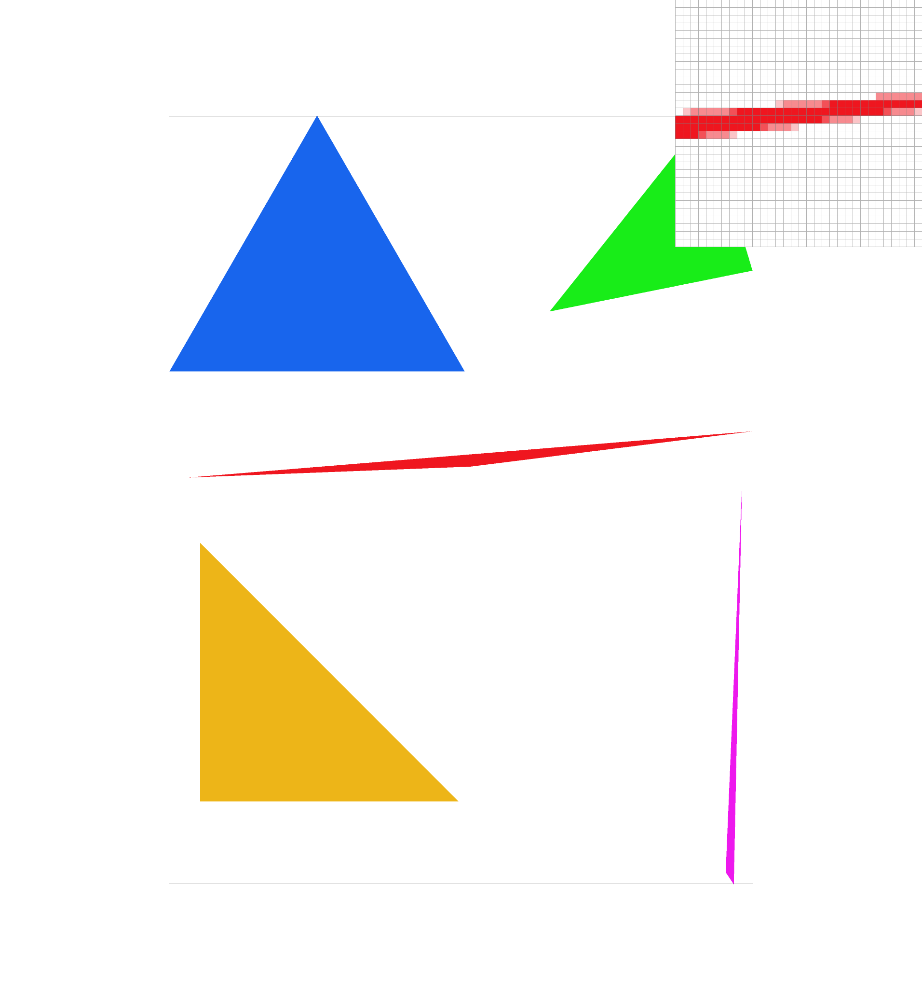
Supersample rate: 4 per pixel.
|
Supersample rate: 16 per pixel.
|
Extra Credit
I implemented a custom jittered supersampling method. This method gets the
same number of samples as the regular grid method. However, it chooses a
random point within each subpixel to sample, instead of the center of the
subpixel. This can reduce grid aliasing even more than normal
supersampling, where moire patterns can still occur when the grid of
samples interacts with the grid of pixels in a way that creates high
frequency signals. By randomly jittering the sample points, we can break
up these patterns and create a smoother image overall.
|
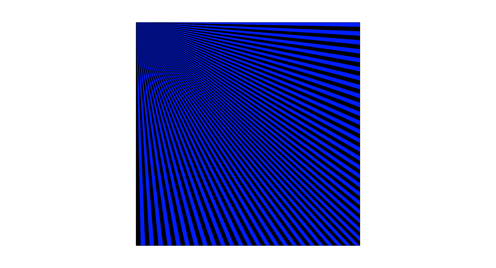
Normal Supersampling: 4 per pixel.
|
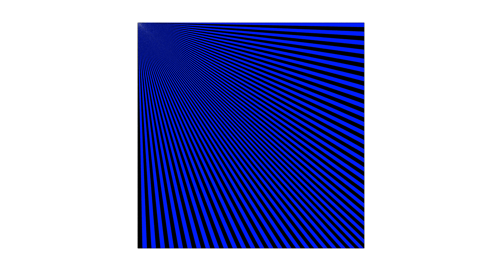
Jittered Supersampling: 4 per pixel.
|
Task 3: Transforms
I am trying to get my cubeman to look like an ice skater by posing with
two arms and one leg outstretched. To do this, I added rotations to the
limbs, allowing me to rotate them into a more natural posture.
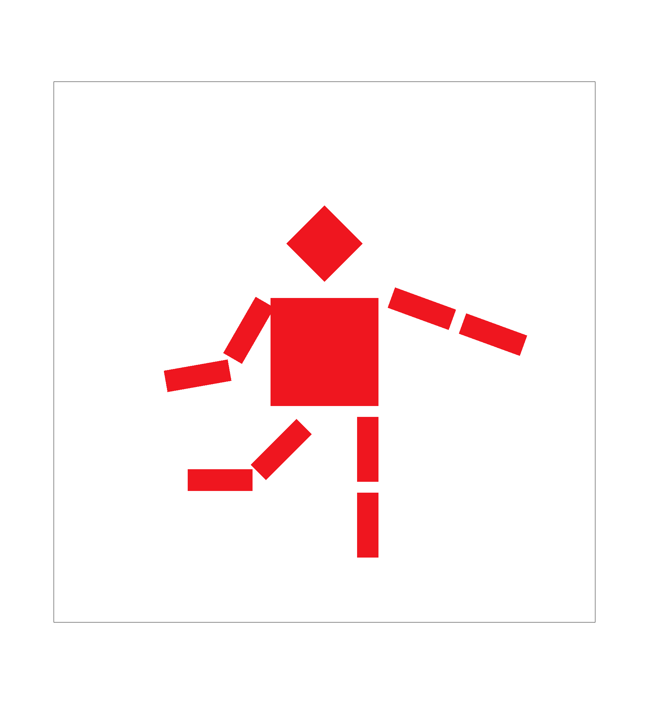
Cubeman ice skating.
Extra Credit
For extra credit, I implemented rotating the entire canvas using the Q and
E keys. This is done by storing a new vector that maintains the rotation
of each image. To handle rotation, I modified the
DrawRend::set_view function and the
svg_to_ndc matrix. It first translates the image to the
origin, rotates the image by the specified angle based on the vector, then
translate the image back, and finally sets the scale based on the span. I
also added the keyboard events by adding the Q and E keys to
DrawRend::keyboard_event. These keys decrement and increment
the rotation vector, then calls
DrawRend::set_view to update
the rotation of the canvas.
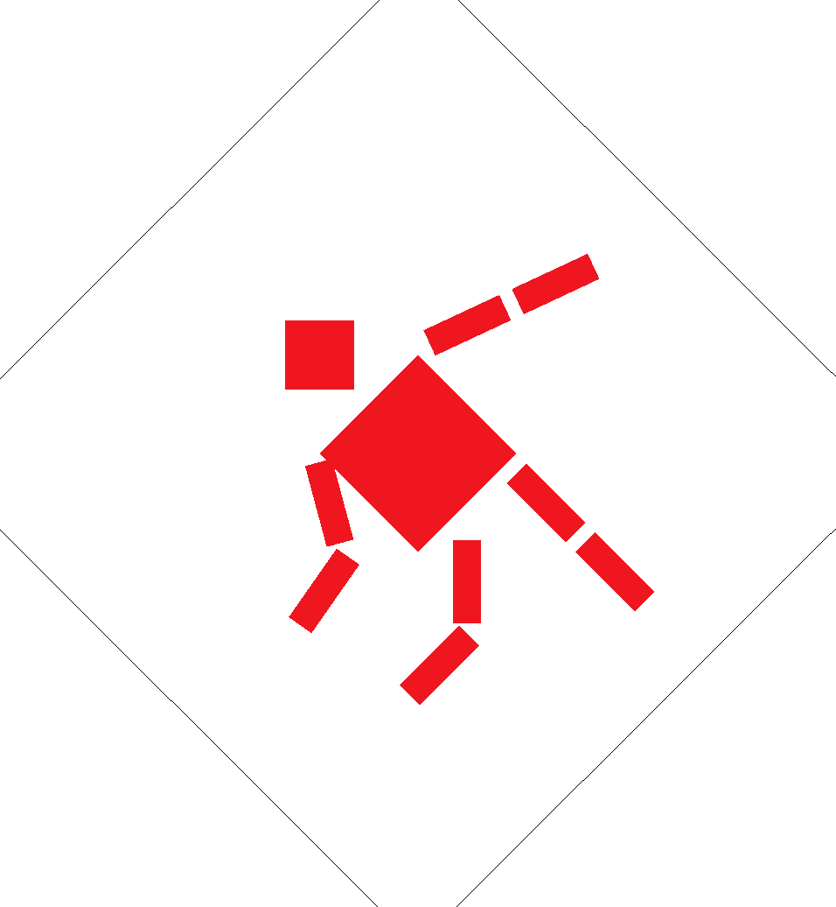
Rotating the entire canvas.
Task 4: Barycentric coordinates
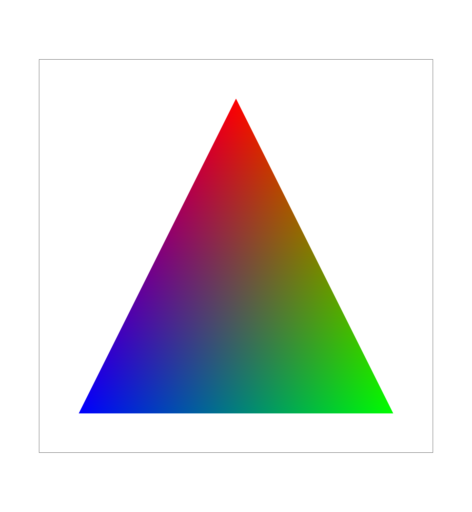
Color triangle with vertices colored red, blue, and green.
The above figure shows a triangle with vertices colored red, blue, and
green. The color in between the triangle is smoothly interpolated with the
colors of the vertices, using a technique called Barycentric coordinates.
Given any point inside of the triangle, we can express it as a weighted
average of the three vertices, where the weights represent how close the
point is to each vertex, and is a value between 0 and 1. Based on this, we
can calculate the color of the point as a weighted average of the colors
of the three vertices, using the same weights. This creates a smooth
gradient effect across the triangle.
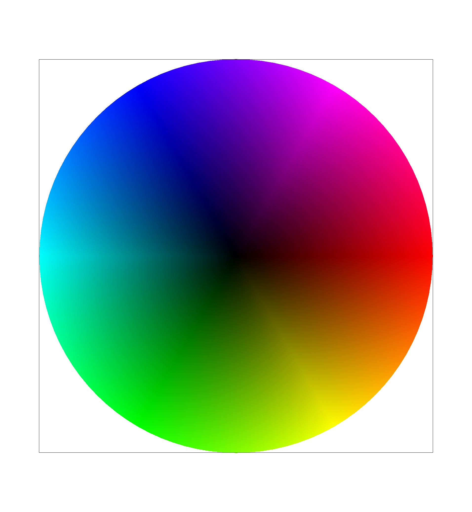
Color wheel with default viewing parameters and sample rate 1.
Task 5: "Pixel sampling" for texture mapping
Pixel sampling involves mapping a texture onto a triangle by sampling the
texture at specific points corresponding to the pixels being rasterized.
For each pixel that falls within the triangle, we calculate the
corresponding level 0 texture coordinates
(u, v) based on the
triangle's vertices and their associated texture coordinates. We then
sample the texture at those coordinates to determine the color that should
be applied to that pixel.
The nearest pixel sampling method simply finds the nearest texture pixel
to the
(u, v) coords, and returns the color of that pixel.
The bilinear pixel sampling method finds the nearest 2x2 texture pixels to
the
(u, v) coords. We calculate how close the coords are to
the
(u, v) coords, then use three linear interpolations on
the colors of the four texture coordinates to find a linearly interpolated
color for the
(u, v) coords.
|
Nearest, Supersample rate 1.
|
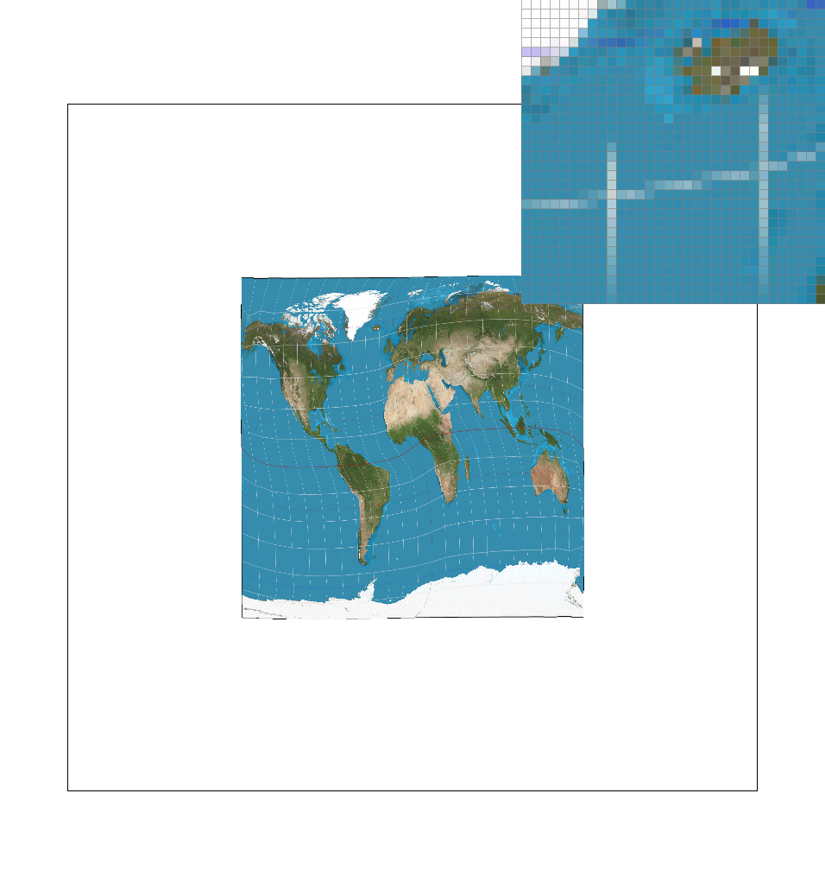
Bilinear, Supersample rate 4.
|
|
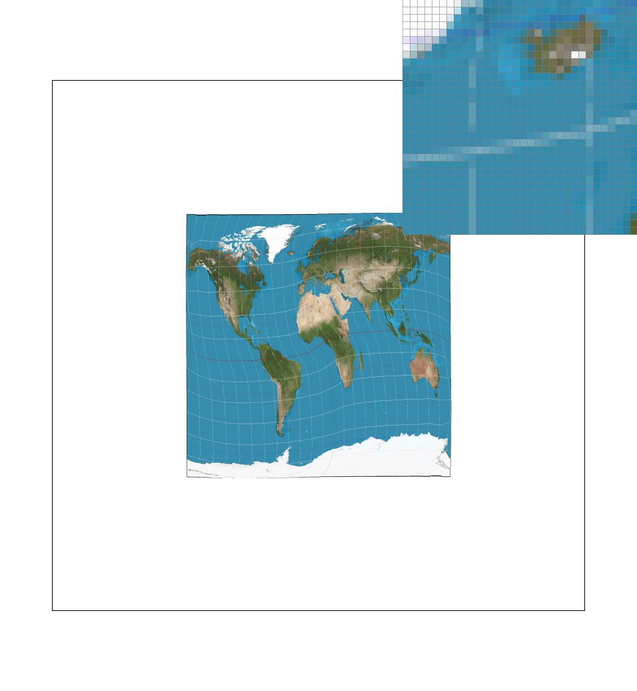
Nearest, Supersample rate 16.
|
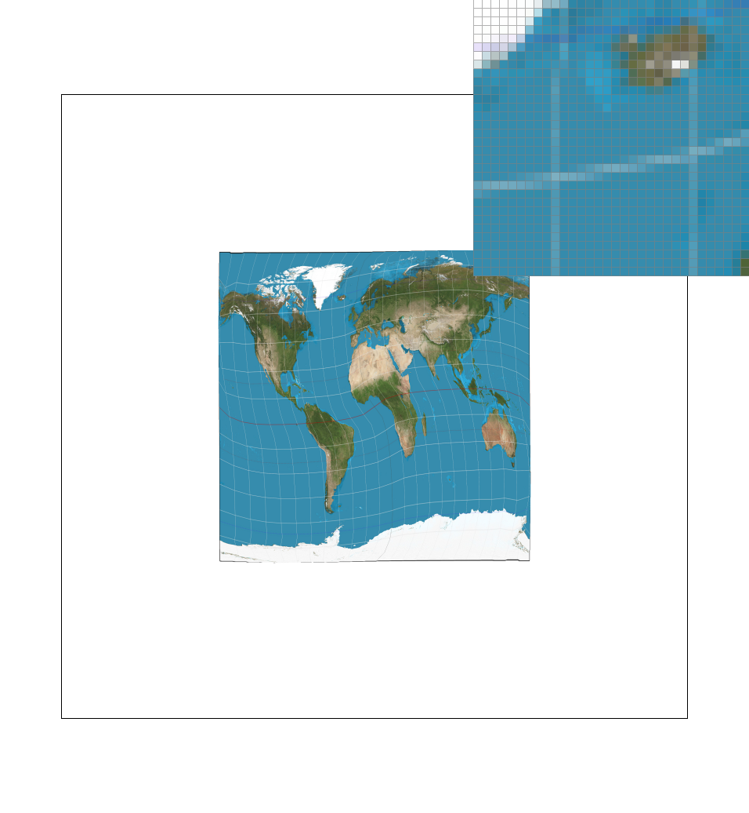
Bilinear, Supersample rate 16.
|
We can see that there is a difference in quality between the nearest and
bilinear sampling methods. In this particular case, I chose a very thin
line that is curved on the globe. The nearest sampling method creates a
jagged, pixelated effect, while the bilinear sampling method creates a
smoother, more blended effect.
The difference in quality between the two methods is more noticible at
image locations with higher frequencies, since the nearest sampling method
can only capture one pixel's worth of information, while the bilinear
sampling method can capture a weighted average of four pixels. These
differences are more noticible at lower supersampling rates, since higher
supersampling rates can capture more information and create a smoother
image overall, reducing the effect of the bilinear sampling.
Task 6: "Level Sampling" with mipmaps for texture mapping
Level sampling is a technique used to both improve performance and reduce
aliasing when texture mapping. We first create mipmaps, which are
precomputed, downsampled versions of the original texture. When
rasterizing a triangle, we use the derivatives of the texture coordinates
to determine how much detail is needed for the texture. Higher derivatives
mean that the texture is changing rapidly across the triangle, so we need
a higher level of detail, or a lower mipmap level. We can use the equation
\[ \text{L} = \log_2(\max(\sqrt{(du/dx)^2 + (dv/dx)^2}, \sqrt{(du/dy)^2 +
(dv/dy)^2})) \] to calculate the appropriate level of the mipmap to
sample. Most of the time, we don't need the full textured image, allowing
for performance improvements. Additionally, since the image is downsampled
appropriately, it can reduce aliasing.
I implemented three different level sampling methods: zero, nearest, and
linear.
-
Zero: We always sample from the zeroth level, or the highest quality
image.
-
Nearest: We calculate \(L\) and round to the nearest integer, sampling
from that image quality level.
-
Linear: We calculate the nearest two levels, \(\lceil L \rceil\) and
\(\lfloor L \rfloor\). We sample colors from both levels, and perform
a linear interpolation between the two colors based on the difference
with the actual level.
-
Pixel Sampling (Bilinear vs Nearest):
-
Speed: Medium cost, requires up to 3 additional samples and 3
linear interpolations per sample for bilinear interpolation.
-
Memory: Low cost, we read from an already stored and loaded texel.
-
Antialiasing: Reduces texture pixelation when textures are zoomed
in too much.
-
Level Sampling (Nearest and Linear vs Zero):
-
Speed: Medium cost, requires additional calculations to determine
the appropriate level, and to 2 additional samples and 1 linear
interpolation per sample for linear interpolation. Combined with
pixel sampling, this requires sampling 8 texels and linearly
interpolating them.
-
Memory: Medium cost, we store an extra 33% texture size for our
mipmaps.
-
Antialiasing: Reduces texture aliasing when textures are zoomed
out too much.
-
Supersampling (number of pixels sampled):
-
Speed: High cost. If we supersample with 4 samples per pixel, our
algorithm will take 4x longer.
-
Memory: High cost. If we supersample with 4 samples per pixel, we
require storing a memory buffer that is 4x larger.
-
Antialiasing: Reduces jaggies on triangles, resulting in a
smoother appearance.
|
Level: Zero, Pixel: Nearest.
No blurring with lowest mipmap level (highest quality).
|
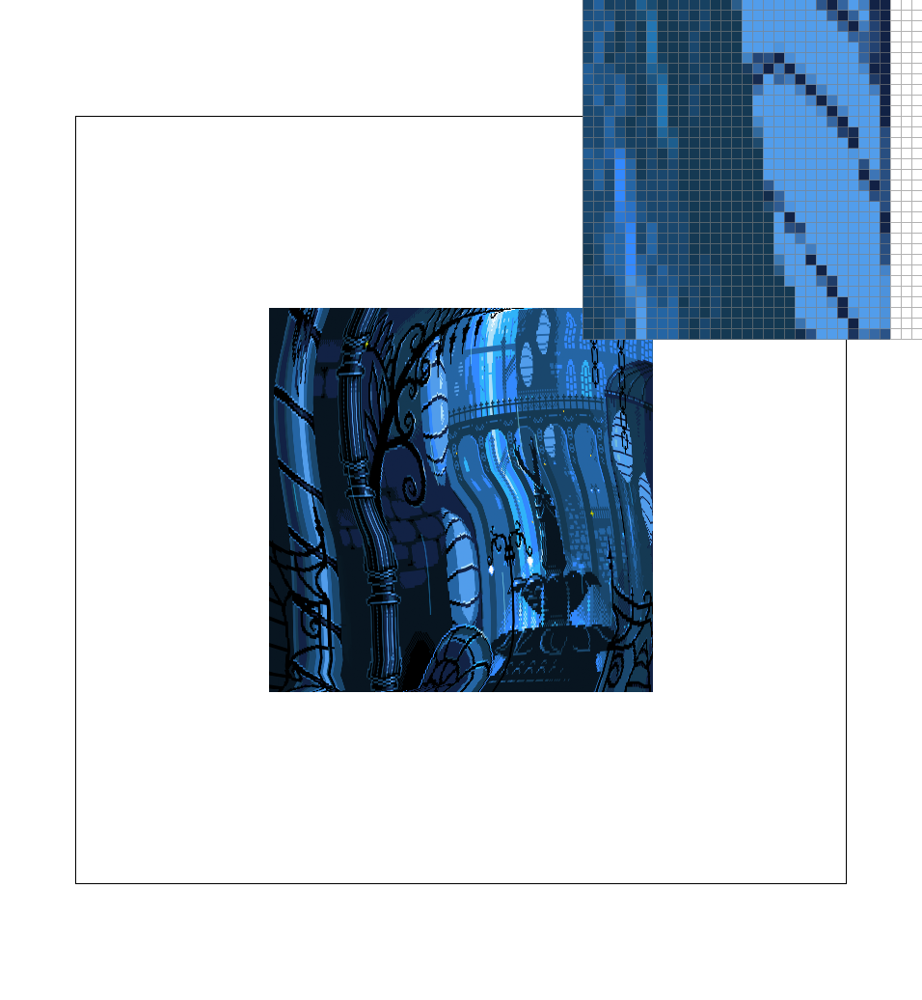
Level: Zero, Pixel: Linear
Texture blurring with lowest mipmap level (highest quality).
|
|
Level: Nearest, Pixel: Nearest
No blurring with nearest mipmap level.
|
Level: Nearest, Pixel: Linear
Texture blurring with nearest mipmap level.
|
(Optional) Task 7: Extra Credit - Draw Something Creative!
I am not creative :(